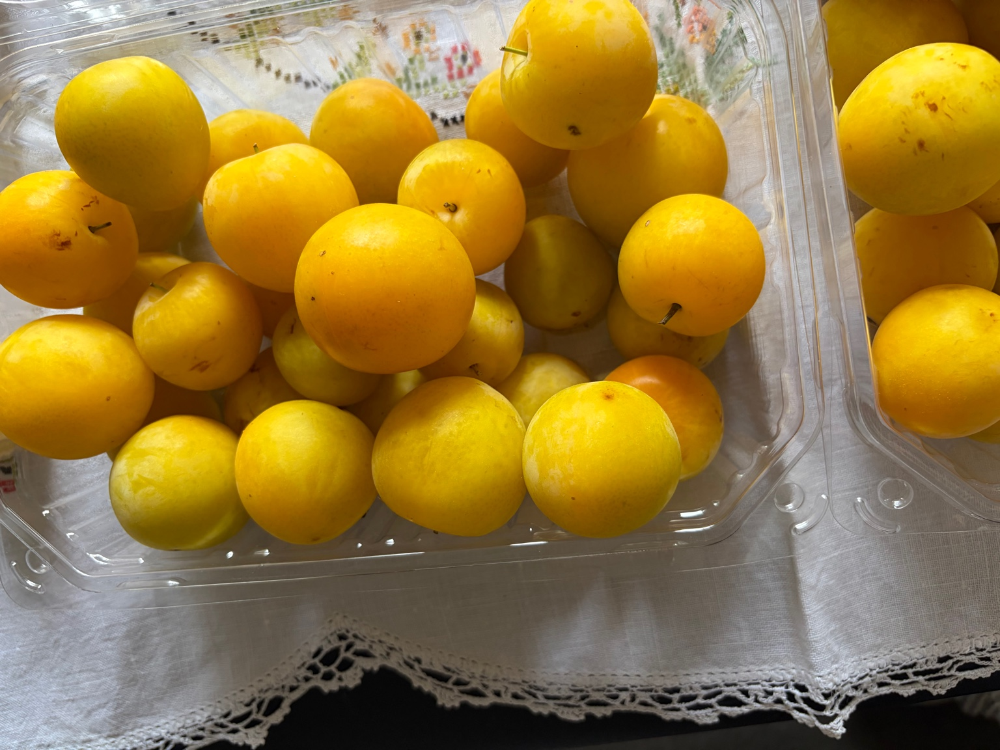
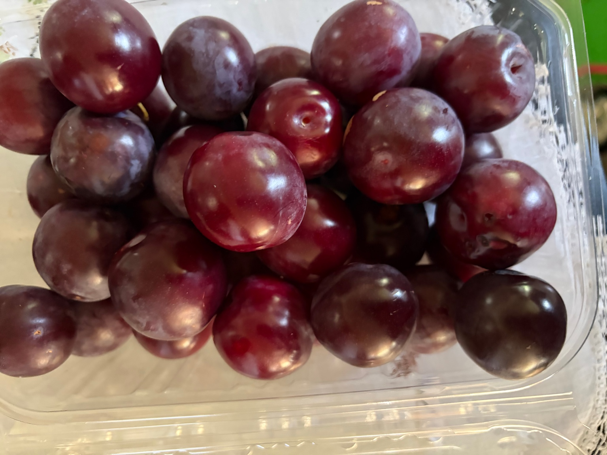
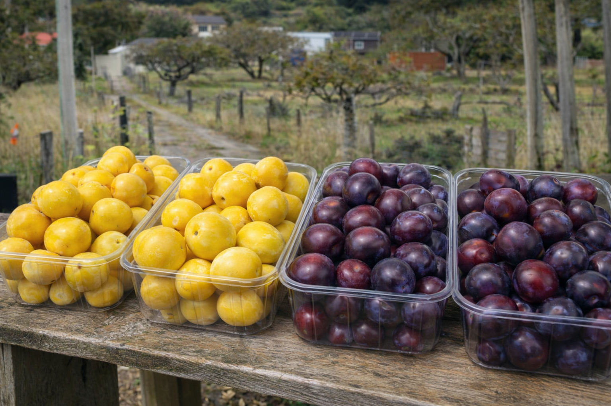

Seasonal Plums in Heathcote, Christchurch
A small, family-run orchard in Heathcote growing seasonal plum varieties, available during the harvest period.
We grow seasonal, spray and chemical free plums in Heathcote, Christchurch, available for local pickup during harvest season.
Key information
Pricing
$5 per kg
Price applies to all available plum varieties. Special pricing may apply for large orders - please get in touch to discuss.
Pickup hours
1pm – 7pm
Or by prior arrangement - please call or text if you’d like to collect outside these hours.
Growing practices
Our plums are spray and chemical free. Please get in touch if you’d like any more details.
About
Heathvale Orchards is a small orchard located in Heathcote, Christchurch. A range of plum varieties are grown on site and are available seasonally during the harvest period. Our plums are spray and chemical free, and produce is available for pickup directly from the orchard.
Heathvale Orchards is located in Heathcote, on the Port Hills of Christchurch. We regularly serve customers from across Christchurch looking for locally grown, spray and chemical free plums during the summer harvest season.
Plum varieties
Heathvale Orchards grows several plum varieties throughout the season. Availability changes as different varieties ripen.
- Shiro – juicy yellow plums, great for eating
- Billington – versatile, ideal for jam and sauces
- Burbank – sweet eating plums
- Black Doris – excellent for jam and preserving
- Purple King – late-season variety
Photos



Visit
Pickup is available during the plum season. Please contact us for current availability and pickup arrangements.